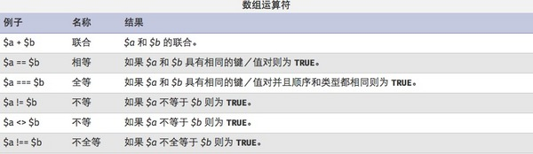

概要
配列とは、プログラミングにおいて、同じ型を持つ複数の変数を順序付きの形式でまとめたものであり、順に並んだ同種のデータ要素の集合を配列と呼びます。PHPの配列変数は、1つまたは複数の値を格納できる「コンテナ」と理解できます。
変数の内容にアクセスするには、その名前を直接使用できます。その変数が配列の場合、変数名とキーワードまたはインデックスの組み合わせを使用してその内容にアクセスできます。
他の変数と同様に、演算子を使用します=配列要素の内容を変更できます。配列のユニットは次の構文でアクセスできます。array[key]構文を使用してアクセスできます。

配列の基本操作
phpで配列を定義する
<?php
$array = array();
$array["key"] = "values";
?>
にPHP配列を宣言する方法は主に2つあります：
1. 〜を使用するarray()関数で配列を宣言します。
2. 配列要素に直接値を代入します。
<?php
//array数组
$users = array('phone','computer','dos','linux');
echo $users;//只会打印出数据类型Array
print_r($users);//Array ( [0] => phone [1] => computer [2] => dos [3] => linux )
$numbers = range(1,5);//创建一个包含指定范围的数组
print_r($numbers);//Array ( [0] => 1 [1] => 2 [2] => 3 [3] => 4 [4] => 5 )
print_r(true);//1
var_dump(false);//bool(false)
//print_r可以把字符串和数字简单地打印出来，数组会以Array开头并已键值形式表示，print_r输出布尔值和null的结果没有意义，因此用var_dump更合适
//通过循环来显示数组里所有的值
for($i = 0 ;$i < 5;$i++){
echo $users[$i];
echo '<br/>';
}
//通过count/sizeof统计数组中单元数目或对象中的属性个数
for($i = 0; $i < count($users);$i++){
echo $users[$i];
echo '<br/>';
}
//还可以通过foreach循环来遍历数组，这种好处在于不需要考虑key
foreach($users as $value){
echo $value.'<br/>';//点号为字符串连接符号
}
//foreach循环遍历 $key => $value；$key和$value是变量名，可以自行设置
foreach($users as $key => $value){
echo $key.'<br/>';//输出键
}
?>
カスタムキーの配列を作成する
<?php
//创建自定义键的数组
$ceo = array('apple'=>'jobs','microsoft'=>'Nadella','Larry Page','Eric');
//如果不去声明元素的key,它会从零开始
print_r($ceo);//Array ( [apple] => jobs [microsoft] => Nadella [0] => Larry Page [1] => Eric )
echo $ceo['apple'];//jobs
//php5.4起的用法
$array = [
"foo" => "bar",
"bar" => "foo",
];
print_r($array);//Array ( [foo] => bar [bar] => foo )
?>
からphp5.4以降は短縮配列定義構文を使用でき、[]の代わりにarray()。javascript中における配列の定義。
each()の使用
<?php
//通过为数组元素赋值来创建数组
$ages['trigkit4'] = 22;
echo $ages.'<br/>';//Array
//因为相关数组的索引不是数字，所以无法通过for循环来进行遍历操作，只能通过foreach循环或list()和each()结构
//each的使用
//each返回数组中当前的键/值对并将数组指针向前移动一步
$users = array('trigkit4'=>22,'mike'=>20,'john'=>30);
//print_r(each($users));//Array ( [1] => 22 [value] => 22 [0] => trigkit4 [key] => trigkit4 )
//相当于：$a = array([0]=>trigkit4,[1]=>22,[value]=>22,[key]=>trigkit4);
$a = each($users);//each把原来的数组的第一个元素拿出来包装成新数组后赋值给$a
echo $a[0];//trigkit4
//!!表示将真实存在的数据转换成布尔值
echo !!each($users);//1
?>
eachのポインタは最初のキーと値のペアを指し、最初の配列要素を返し、そのキーと値のペアを取得して、新しい配列にラップします。
list()の使用
list配列の値をいくつかの変数に代入するために使用します。次の例を見てください：
<?php
$a = ['2','abc','def'];
list($var1,$var2) = $a;
echo $var1.'<br/>';//2
echo $var2;//abc
$a = ['name'=>'trigkit4','age'=>22,'0'=>'boy'];
//list只认识key为数字的索引
list($var1,$var2) = $a;
echo $var1;//boy
?>
注：list数字のキーを持つインデックスのみを認識します。
配列要素のソート
反向排序:sort()、asort()和 ksort()都是正向排序,当然也有相对应的反向排序. 实现反向:rsort()、arsort()和 krsort()。 array_unshift()函数将新元素添加到数组头,array_push()函数将每个新元素添加到数组 的末尾。 array_shift()删除数组头第一个元素,与其相反的函数是 array_pop(),删除并返回数组末 尾的一个元素。 array_rand()返回数组中的一个或多个键。 函数shuffle()将数组个元素进 行随机排序。 函数 array_reverse()给出一个原来数组的反向排序
配列の各種APIの使用
注：count()とsizeof()は配列のインデックスの数を数えます。
array_count_values()は配列内のインデックス値の数を数えます。
<?php
$numbers = array('100','2');
sort($numbers,SORT_STRING);//按字符串排序，字符串只比较第一位大小
print_r($numbers);//Array ( [0] => 100 [1] => 2 )
$arr = array('trigkit4','banner','10');
sort($arr,SORT_STRING);
print_r($arr);//Array ( [0] => 10 [1] => banner [2] => trigkit4 )
shuffle($arr);
print_r($arr);//随机排序
$array = array('a','b','c','d','0','1');
array_reverse($array);
print_r($array);//原数组的反向排序。 Array ( [0] => a [1] => b [2] => c [3] => d [4] => 0 [5] => 1 )
//数组的拷贝
$arr1 = array( '10' , 2);
$arr2 = &$arr1 ;
$arr2 [] = 4 ; // $arr2 被改变了,$arr1仍然是array('10', 3)
print_r($arr2);//Array ( [0] => 10 [1] => 2 [2] => 4 )
//asort的使用
$arr3 = & $arr1 ;//现在arr1和arr3是一样的
$arr3 [] = '3' ;
asort($arr3);//对数组进行排序并保留原始关系
print_r($arr3);// Array ( [1] => 2 [2] => 3 [0] => 10 )
//ksort的使用
$fruits = array('c'=>'banana','a'=>'apple','d'=>'orange');
ksort($fruits);
print_r($fruits);//Array ( [a] => apple [c] => banana [d] => orange )
//unshift的使用
array_unshift($array,'z');//开头处添加一元素
print_r($array);//Array ( [0] => z [1] => a [2] => b [3] => c [4] => d [5] => 0 [6] => 1 )
//current(pos)的使用
echo current($array);//z;获取当前数组中的当前单元
//next的使用
echo next($array);//a;将数组中的内部指针向前移动一位
//reset的使用
echo reset($array);//z;将数组内部指针指向第一个单元
//prev的使用
echo next($array);//a;
echo prev($array);//z;倒回一位
//sizeof的使用
echo sizeof($array);//7；统计数组元素的个数
//array_count_values
$num = array(10,20,30,10,20,1,0,10);//统计数组元素出现的次数
print_r(array_count_values($num));//Array ( [10] => 3 [20] => 2 [30] => 1 [1] => 1 [0] => 1 )
?>
current()：各配列には現在の要素を指す内部ポインタがあり、初期状態では配列に挿入された最初の要素を指します。
forループによる走査
<?php
$value = range(0,120,10);
for($i=0;$i<count($value);$i++){
print_r($value[$i].' ');//0 10 20 30 40 50 60 70 80 90 100 110 120
}
?>
配列の例
array_pad関数の使用
<?php
//array_pad函数，数组数组首尾选择性追加
$num = array(1=>10,2=>20,3=>30);
$num = array_pad($num,4,40);
print_r($num);//Array ( [0] => 10 [1] => 20 [2] => 30 [3] => 40 )
$num = array_pad($num,-5,50);//array_pad(array,size,value)
print_r($num);//Array ( [0] => 50 [1] => 10 [2] => 20 [3] => 30 [4] => 40 )
?>
size:指定された長さ。正の整数の場合は右側に埋め、負の整数の場合は左側に埋めます。
unset()の使用
<?php
//unset()的使用
$num = array_fill(0,5,rand(1,10));//rand(min,max)
print_r($num);//Array ( [0] => 8 [1] => 8 [2] => 8 [3] => 8 [4] => 8 )
echo '<br/>';
unset($num[3]);
print_r($num);//Array ( [0] => 8 [1] => 8 [2] => 8 [4] => 8 )
?>
array_fill()の使用
<?php
//array_fill()的使用
$num = range('a','e');
$arrayFilled = array_fill(1,2,$num);//array_fill(start,number,value)
echo '<pre>';
print_r($arrayFilled);
?>
array_combine()の使用
<?php
$number = array(1,2,3,4,5);
$array = array("I","Am","A","PHP","er");
$newArray = array_combine($number,$array);
print_r($newArray);//Array ( [1] => I [2] => Am [3] => A [4] => PHP [5] => er )
?>
array_splice()で配列メンバーを削除
<?php
$color = array("red", "green", "blue", "yellow");
count ($color); //得到4
array_splice($color,1,1); //删除第二个元素
print_r(count ($color)); //3
echo $color[2]; //yellow
echo $color[1]; //blue
?>
array_uniqueで配列内の重複値を削除
<?php
$color=array("red", "green", "blue", "yellow","blue","green");
$result = array_unique($color);
print_r($result);//Array ( [0] => red [1] => green [2] => blue [3] => yellow )
?>
array_flip()で配列のキーと値を交換
<?php
$array = array("red","blue","red","Black");
print_r($array);
echo "<br />";
$array = array_flip($array);//
print_r($array);//Array ( [red] => 2 [blue] => 1 [Black] => 3 )
?>
array_search()で値を検索
<meta charset="utf-8">
<?php
$array = array("red","blue","red","Black");
$result=array_search("red",$array)//array_search(value,array,strict)
if(($result === NULL)){
echo "不存在数值red";
}else{
echo "存在数值 $result";//存在数值 0
}
?>
さらなるチュートリアル
より詳細なチュートリアルは以下を参照してください：PHP チュートリアル
著者：trigkit4
出典：http://segmentfault.com/a/1190000002723270